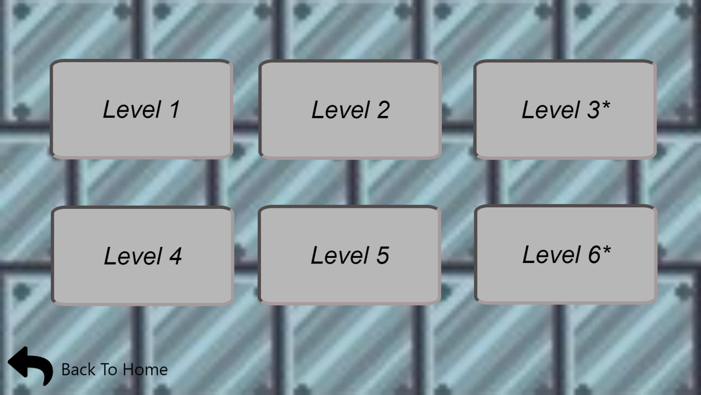

Robo-Rush
Game Design Document
By: Mazen Ibrahim, Jamyang Ponsar, & Henry Chen
INTRODUCTION:
This document describes a game called "Robo-Rush", which is designed to be a simple, 2D running side-scroller. The game will employ sprite-based animation, tiled backgrounds, collision detection, physics, AI, side scrolling & gravity, efficient memory management, render threading, and more basic 2D game techniques.
TECHNOLOGY:
Robo-Rush will be developed for the Windows Platform using the Wolfie 2D game engine, which is a bare-bones engine developed by Richard McKenna and SBU students for rapid prototyping 2D games. We haven't decided yet what will be used for all music and sound effects management and artwork.
BACK STORY:
The laboratories of the master evil scientist Doctor HEHE have been found in the Mazonian jungle by government satellites. In response, his twin brother, Doctor SIGMA, has launched his secret project, an all-terrain cybernetic android named PAKMA, in order to search the jungle and capture Doctor HEHE. The robot enters the jungle on the hunt for Doctor HEHE. However, Doctor HEHE has surprises that lay in front of our robotic hero.
OBJECTIVE:
The objective of the game is for PAKMA, the robotic hero, to survive all the obstacles set by doctor HEHE in the Mazonian jungle and get to his laboratory in which Dr. HEHE resides. PAKMA has to defeat Dr. HEHE and capture him in order to put a stop to his evil schemes.
GAMEPLAAY:
The game will be a finite side scroller with 6 different levels. PAKMA runs deep into the jungle as he tries to avoid different types of obstacles. At some parts of the stage, PAKMA will stand on a vine/pipe where he can flip around it. PAKMA also has a built in laser to destroy any immediate obstacle and/or evil robot monkey in his path; he will need to accumulate CHARGE over the course of the level in order to use his laser. Each level will get progressively harder with more and more obstacles as we approach closer and closer to Dr.HEHE’s laboratory. Level 3 will be a mini-boss and Level 6 will be the final boss.
CONTROLS:
This game will be played using a keyboard. Once started, use the following:
- SPACE / W - Jump
- SPACE SPACE / W W - Double Jump
- S - If PAKMA is on the rope he can go upside down using this button
- W - While PAKMA is upside down on the rope he can go back using this button but if he is already in position this is just the jump button.
- E - Shoot Laser
- ESC - This pauses the game and presents a pop-up window to the player asking them to continue when they are ready. If a game is not in progress, ESC does nothing.
GRAPHICAL USER INTERFACE:
As far as the GUI is concerned, if we consider:
- Splash Screen - The splash screen GUI simply presents a game logo and a Start button for the user to press when they are ready to play. Upon pressing it, a brief scripted sequence is played explaining a little about PAKMA and the backstory for the game. While playing the message "Press ESC to Skip'' should be displayed at the bottom of the screen. If pressed, the game should immediately start.
- In-Game Menu - While the game is in progress, we'll always have a game menu that allows the player to select from the following options:
- Restart Game - If a game is in progress, first we'll pop up a dialog to make sure the user really wants to quit the current game. If we conclude the user really wants to start a game, then the game state is reset and begun.
- Display Controls - If pressed, the game will display an info screen that includes a description of all game controls.
- About/Help - If pressed, the game will display an info screen with information about the game author.
- Exit - If pressed, the game program will exit back to the splash screen.
- Level Selection Screen - Once a player reaches a certain level, that level will be unlocked for the rest of their playthrough. They can go back to their current or completed level.

- In-Game GUI - Once a game starts, a 5-4-3-2-1-Begin sequence is counted down and displayed for the player to see. At the beginning, PAKMA lands at the beginning of the jungle and plays his entrance while the countdown is still going and then when the countdown ends, PAKMA will start running. While playing the following will be displayed at all times:
- PAKMA's Health
- Level Progress
- Charge Progress
ARTWORK:
All artwork in the game will be original. The following needs to be created:
- PAKMA - Robot looking sprite
- Idle
- Entrance
- Running
- Jumping
- Double Jumping
- Full Charge
- Taking Damage
- Level Complete
- Dying
- Dead
- Evil Robot Monkeys - Simple sprites, each require animations for:
- Attacking Left
- Throwing
- Dying
- Dead
- PAKMA’s Laser Attack - A huge laser where we plan to use the shaders for
- Obstacles - The obstacles that PAKMA has to avoid include:
- Terrain obstacles like a tree trunk or lab machines that he has to jump over.
- Spikes that Dr HEHE planned as a trap for PAKMA.
- Holes with a chemical that alters PAKMA’s controls for a couple of seconds.
- Ground and Rope - Depending on the level the ground that PAKMA will be running on will be either green and forest themed if he's in the jungle. The rope would be a thick vine. In the laboratory the ground would be white and lab themed. The rope would be a pipe in the laboratory.
- Background - The background will be based on the level. If the level takes place in the jungle then the background will be similar to a forest so maybe just some trees and a lot of green. If the level takes place in the laboratory then the background will be more white and modern so that it looks like an obvious laboratory.
SOUND EFFECTS:
All sound effects will be original. Sounds must be made to coincide with each of the following events:
- Jumping
- PAKMA Attack
- Monkey Attack
- Colliding with Obstacle
- Collecting Charge
- Full Charge
- PAKMA Dying
- Monkey Dying
- PAKMA Celebrating Clearing a Level
MUSIC:
Game Music will be added when time permits.